En elmundo en el que vivimos , sabemos que hay bastantes animales en peligro se extinción , por eso he decidido crear esta página web para conocer así un poco más sobre estos distintos animales.
el primero del que vámos a hablar es el gorila de montaña
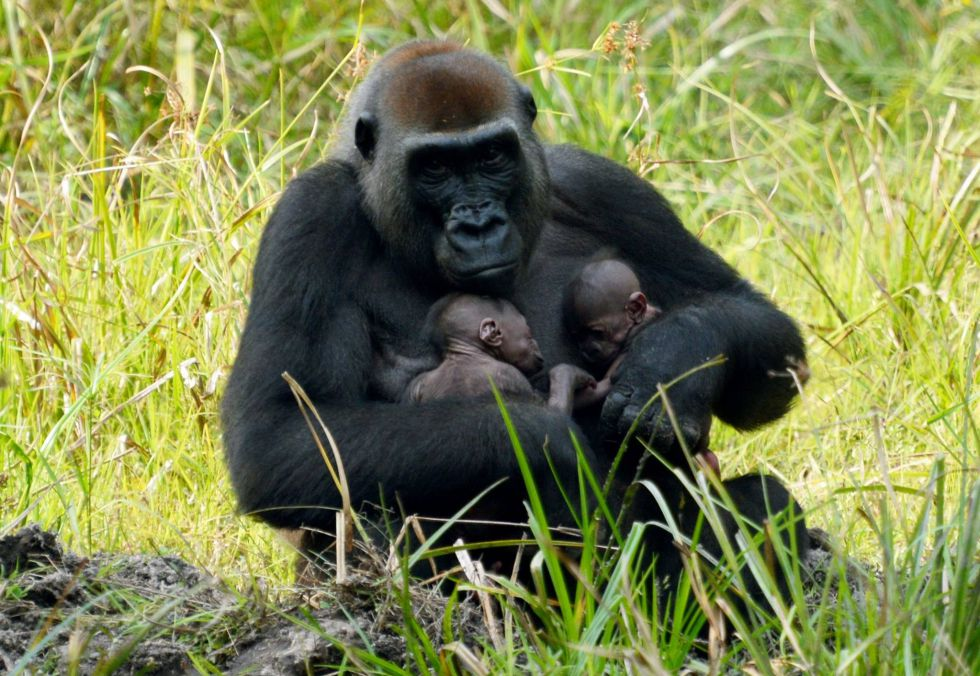El gorila de montaña, es uno de los primates más grandes del mundo , al igual que el lince,se ve muy amenazado hasta llegar en estado critico,en su hábitat natural solo quedan 720 individuos de estos, más de 200 viven en el congo y unos 200 en uganda,no todo es malo , en estos últimos 12 años la población se ha incrementantado un 14%
la caza furtiva es gran inconveniente, ya que masacra tanto a la fauna como al hábitat de más especies.El segundo animal de que vamos a hablar es el elefante , estese caracteriza por ser el mamífero terrestre más grande de la tierra. La mayor amenaza es ,como en la anterior, la caza furtiva que de da lugar a la compra y venta de marfil (proveniente de sus colmillos) afecta seriamente a la población en Asia y en África , otro problema con estas criaruras es la disminución de su háibtat natural para la plantación y creación de infraestrucctura para el ser humano. Como dato hay que mencionar que en África, concretamente en Botsuana, ha permitido la caza de todo tipo de animales, peligrosos o no , por la sobrepoblación de elefantes en esa región por dos motivos,uno , para contentar a los agricultoures y dos, para atraer población y con eso, ingresos económicios.
Otro, es el oso polar, debido al calentamiento global y a las petroleras , el hábitat de estos animales, está desapareciendo rápidamente, por eso están en la llamada "linea roja" de la extinción . El desprendimiento de la capas de hielo , obliga a los osos polares a recorrer grandes distancias tan solo para poder conseguir comida. También, se dio el caso este invierno las migraciones hacia Rusia ya que este clima era mucho más frío que el suyo.
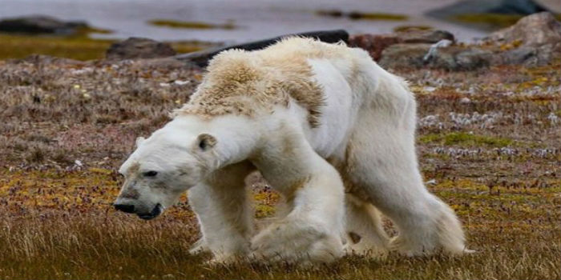En este caso no es posible contar el números de ejemplares que quedan debido a su rango de distribución. No existe ningún tipo de distribución mundial debido a su baja potencia para reproducirse y su larga y durarera infancia además de la pesca, aúnque si he de decir que ya se ha prohibido su pesca en costas como en la de E.E.U.U., México y Sudáfrica.
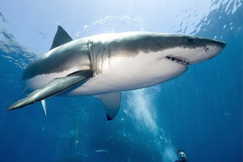Esta especicie de reinoceronte es el más grande de las 5 que existe, es una de las dos especies de reinocerontes que viven en la sabana africana (los rinocerontes blancos y negros). una muy triste noticia, es que el último ejemplar macho fue sacrificado el 20 de Marzo de 2018 tras tres semanas de enfermedad, por lo ahora solo se pueden encontrar hembras en todo el mundo.
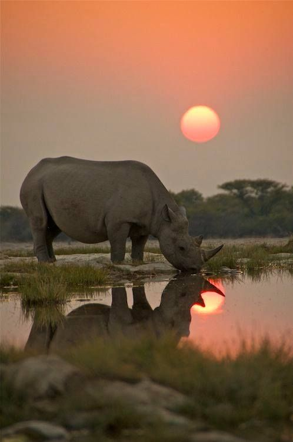desde el año 2006 esta especie ha disminuido repentinamente por culpa de la demanda del sushi en occidente. En el oceano Atlántico ha disminuido un 90% y en el mar Mediterraneo un 60%
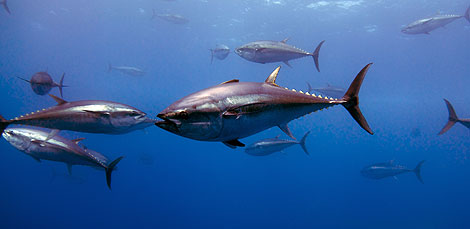El tigre de amony tembién conocido como tigre del sur de China, está en un estado críco de extinción , esta raza de tigre es la más pequeña , siedo así , una representación reducida del tigre de vengala . Es triste mencionar , que hoy en día no existe ningún tigre que viva en su hábitat natural,es decir, todos viven en cautiverio. Su hábitat natural era el sur (mayoriariamente) y todo el territorio Chino. su alimentación se basa en animales capaces de saciar su apetito por algún tiempo , como por ejemplo jabalies, pavos reales, venado... pero más tarde se vio obligado a alimentarse del ganado, cosa que depúes, le seía perjudicial . en este caso ,e l problema no sería la caza furtiva como otrtos animales , sino la invasión humana, llevandolo así por sus instintos la caza de próximas presas (humanos) al hacer esto, los invasores iniciaron cazas masivas a estos animales 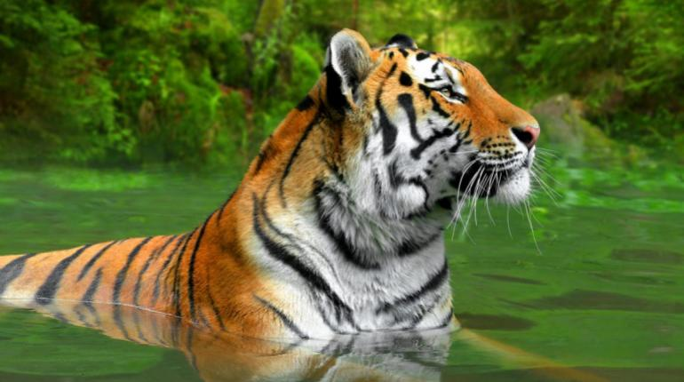
El leopardo de arabia es una subespecie de leopardo que está gravísimo estado de extinción , estudios demuestran , que no quedan más de 250 ejemplares en todo el mundo. En demasiadas ocasiones a sido objeto de trofeos en cacerías , su piel, ha sido sumamente cotizada en los mercados ilegales debiodo a la desaparición drástica de sus presas comunes lo ha llevado a la alimentación del ganado, que lo ha sometido a enfrentamiento permanentes que siguen hiy en día con los ganaderos. Es común oir es a de queja de" a saber los animales que han tenido que morir para que tú lleves eso" incluso , se dice com ouna gra cia , pero sinceramente no creo que deba ser visto como esto último.
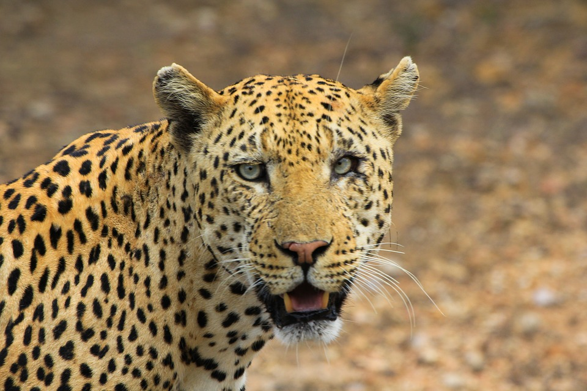El león africano no se considera un predador natural, solo quedan 20000 ejemplares en todo el mundo .Se caracterizan por la diferencia entre machos (que tienen una majestusa melena ) y hembreas (que no la tienen) pero esto no siempre es así ya que las hembras pueden desarrollar melena debibo a que producen mas testosterona de lo común y lo machos pueden a llegar a no desarrollarla . Este tipo de animal he reducido un 40% que ha sio consecuencia de la pérdida de si hábitat (un 8%, que , parecera poco pero no deberían de haber pérddo nada de este) de lo algún día fue.
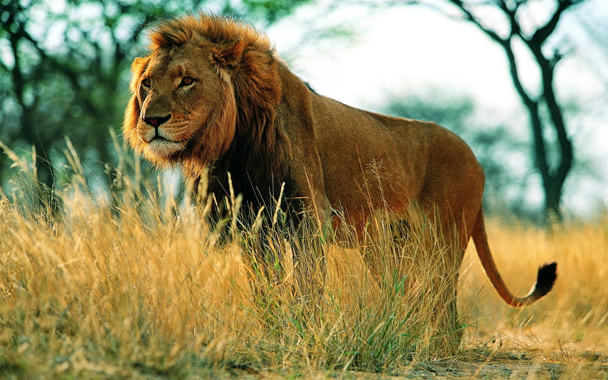 C A N G U R Ocuando las personas oyen la palabra canguro piensan en canguro, piensan en Australia, pues bien, estos animales provenientes de Oceanía están en peligro de extinción. Son seres hebíboros estrictos, no son ofensivos para la estpecie humana, pero nosotros consmimos su carne y los exportamos hacia otros países pera comercializar con ellos. según expertos si seguimos así y la temperatura del planeta del planeta sigue aumentando los conderanemos a desaparecer en pocos años.
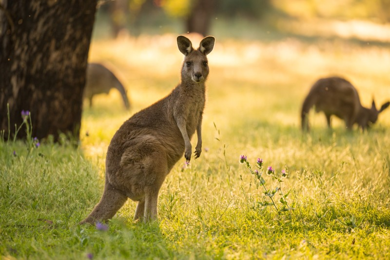Como les pasan a los osos polares , estos sufren las mismas consecuencias del cambio climático y las petroleras , son animales que migran y muchos están muruando en el camino por lo que ya han entrado en la lista de animales de mayor peligro de extinción como viven en el polo sur su hábitat está desapareciendo . Se tiene calculado que para el año 2030 , si seguimos así, desaparecerán los polos y con ellos los seres vivios que habitan en ellas como estpas nimales.
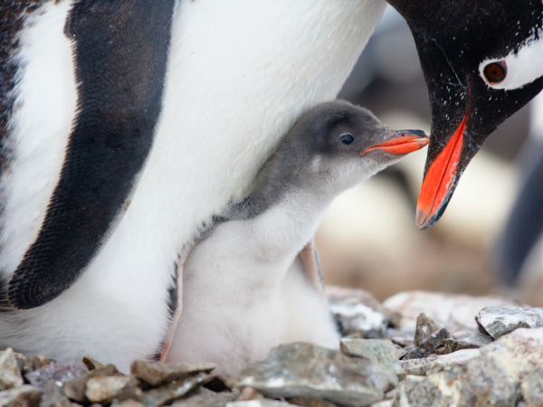Los peroos salvajes de África es otra de las especies en mayor peligro de extinción del mundo , lo peor es que los perros siguen en disminuyendo . Hay variasa amenazas; -su caza ilegal -contrabando de pieles -su captura viva como mascotas En África , se ha llegado a tenerlos domesticados para que sirvan de guardianes juno otros animales como guepardos ...
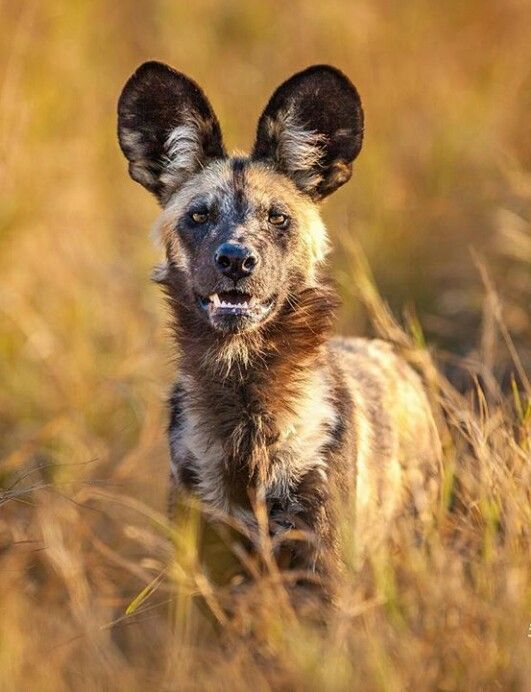